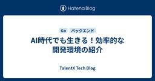

TalentX Tech Blog
https://tech.talentx.co.jp/
Tech Blog
フィード

AI時代でも生きる！効率的な開発環境の紹介
TalentX Tech Blog
こんにちは、TalentXでバックエンドを担当している桃谷です。 昨今、AIエージェントによる開発が浸透しておりますが、みなさんは生産性が向上している実感はありますでしょうか？ AIエージェントをどのように使うか？という内容は毎日のように記事が更新され、活発に議論がされておりますが、AIに良いアウトプットを出してもらうためには、それを受け取る側の開発環境も整っていることが重要だと感じています。 このようなAIエージェントによる開発が一般的になった時代でも... いやこんな時代だからこそ、効率的な開発環境を作り上げるということがなおさら重要になってきたのではないかと思っています。 ということで今…
5日前

ReactでのPDFダウンロード機能の実装と技術選定時の判断ポイント
TalentX Tech Blog
こんにちは、TalentXでフロントエンドを担当している大村です。 今回は、ReactアプリケーションでPDFダウンロード機能を実装した際の技術選定の経緯と、最終的な実装内容についてまとめます。 同じようにReactでPDFダウンロード機能を検討しているフロントエンドエンジニアの方の参考になれば幸いです。 背景 なぜフロントエンドでPDF生成するのか PDF生成の実装方法として、大きくバックエンドで生成する方法とフロントエンドで生成する方法があります。 それぞれの一般的なメリット・デメリットは以下のとおりです。 バックエンドで生成する場合 サーバー側のリソースを使うため、クライアントの端末スペ…
16日前
State of JS 2025 から読み解く！ES2025の新機能と今注目のプロポーザルまとめ
TalentX Tech Blog
こんにちは！TalentXでMyTalentを開発しているフロントエンドエンジニアの田中です💃 早いもので2026年になってから2ヶ月が経ち、今月冒頭には State of JS 2025 が公開されましたね🎉 本日はState of JS 2025をふまえてES2025で正式採用された注目機能と、開発者が今最も期待しているTC39プロポーザルを紹介しながら、「JavaScriptはどこへ向かおうとしているのか？」を整理していきたいと思います！ 2025.stateofjs.com 1️⃣ ES2025（ECMAScript 2025）で正式採用された機能たち まずは個人的に魅力的だった利用頻…
1ヶ月前
要件定義の「失敗」から学んだ検討のフレームワーク
TalentX Tech Blog
はじめまして、TalentXでPdMをしている佐久間です。 今回は、私がPdMになりたての頃に経験した「要件検討の失敗」と、そこから試行錯誤して辿り着いた具体的な実務アクションについてまとめてみました。 一人のPdMが失敗から学んだ「思考のアップデート」の記録として、読み進めていただければ嬉しいです。 そもそもなぜエンジニアからPdMになったのか エンジニアの仕事は、純粋に楽しかったです。新しい技術に触れ、難解なロジックを解き明かす達成感は何物にも代えがたいものでした。 ただ、エンジニアとして実装に向き合う中で、次第に「この機能が解決する課題の背景」をもっと深く知りたい、自分もその定義から関わ…
1ヶ月前
SRE Kaigi 2026に登壇してきました
TalentX Tech Blog
TalentXでCTOを務めている籔下です。 2026年1月31日に開催された「SRE Kaigi 2026」で登壇してきました。当日お聞きいただいた皆様、運営の皆様、本当にありがとうございました！ 今回は、登壇の背景や発表内容について振り返りを兼ねてブログにまとめたいと思います。 当日全然写真を撮っていなかったことに気づいた。。 SRE Kaigi 2026とは 2026.srekaigi.net 登壇にいたった背景 TalentXは、リファラル採用クラウド「MyRefer」から始まり、現在は採用MAクラウド「MyTalent」など、複数のプロダクトを展開する「採用DXプラットフォーム」へと…
2ヶ月前
Sentryエラー調査をDevinに丸投げして生産性・開発体験向上した話
TalentX Tech Blog
はじめに 従来のSentryエラー対応フロー 手動調査の流れ 課題点 1. コンテキストスイッチのコスト 2. 調査の属人化 3. 深夜・休日のエラー対応 Devin × Sentry × Slack 自動調査構築手順 全体アーキテクチャ 1. エラー発生 → Slack通知 2. スタンプ押下でワークフロー起動 3. Devinに調査依頼 4. Devin調査実行 4-1. 認証情報の安全な取得 4-2. Devin内蔵ブラウザによる自動ログイン 4-3. Playbookに従った調査実行 5. 結果報告 導入後の成果 まとめ はじめに こんにちは！MyReferフロントエンドエンジニアの佐…
2ヶ月前
Devin × Atlassian MCPによるエラー対応の半自動化
TalentX Tech Blog
こんにちは、TalentXでバックエンド開発をしている内之丸です。 今回は、Slack・Jiraを利用している開発チーム向けに、Devin × Atlassian MCPを使用してエラー調査から改修までの対応を半自動化する方法をご紹介いたします。 前提 Devinについて Cognition社が開発した自律型AIエージェントで、要件理解から設計、実装、テスト、修正までを一貫して行うことができます。 本記事では、エラー発生時の調査や改修対応を担うエージェントとしてDevinを活用します。 TalentXでもDevinを導入し、開発やレビュー、調査等に活用しています。 Jiraについて プロジェク…
2ヶ月前
時短勤務ワーカーとしての仕事の向き合い方
TalentX Tech Blog
こんにちは。QAエンジニアの中島です。 私は現在、5歳の子どもを育てる母親であり、エンジニアチームで「時短勤務」というスタイルで働いています。 今回は、時短勤務だからこそ日頃から意識していることや、仕事への向き合い方、活用しているツールや会社の制度についてお話したいと思います。 「時短勤務での働き方に興味がある方」や「チームに時短メンバーを迎える予定のある方」にとって、少しでも参考になれば幸いです。 時短勤務ワーカーが常に意識している「3つのルール」 現在私はリモート勤務で、1日6.5〜7.5時間ほど勤務しています。 会社の制度がとても柔軟なので、一般的な時短勤務よりは少し長めに、自分にとって…
2ヶ月前
画面設計における状態管理の判断軸について
TalentX Tech Blog
はじめに TalentXフロントエンドエンジニアの中村です。 フロントエンド開発では、UIの状態をどこで管理するかという判断に迷う場面がよくあります。 コンポーネントの state、URL など、技術的にはどれを選んでも成立するケースも多く、「明確な正解がない」と感じることも少なくありません。 本記事は、状態管理に関する一般的なベストプラクティスをまとめるものではなく、 あくまで自分自身が実務の中で判断するときに、どのような観点で考えているかを整理したものです。 同じ状況でも、チームやプロダクトによって判断は変わり得る、という前提で読んでもらえればと思います。 UIの状態にはいくつかの捉え方が…
2ヶ月前
持て余さないためのDevinの活かし方
TalentX Tech Blog
はじめに TalentXの岸本です。昨今AIの発展が著しい中、弊社でもAI駆動開発という観点で効率的な運用を模索しています。 そうした開発を行っている中、Devinの運用を通じて得た他エージェントとの棲み分けやDevinならではの使い方をまとめてみました。 想定読者 Devinの導入を検討しているが利用イメージがわかないという方 Devinを導入したものの効果的な利用ができていない方 ※ Devinの情報をある程度知っている方向けの記事になります。概要や使い方等は省かせてもらいます。 AIエージェントを利用した開発スタイル TalentXで主に利用されているのは、Devinの他にClaude …
3ヶ月前
Aurora MySQLのデータをSnowflakeへ集約する基盤を構築した話
TalentX Tech Blog
はじめに こんにちは、SREチームの前野です。 現在SREチームでは、TalentXにおけるデータドリブンな意思決定を加速させるため、全社のデータを集約する分析基盤の構築を進めています。 本記事では、その最初のユースケースである「プロダクト（Myシリーズ）のデータベースのデータをSnowflakeへ集約し、PdMチームが機能要件策定に活かすためのデータ分析基盤の構築」について、具体的なアーキテクチャと実践的なTipsを紹介します。 導入前の２つの課題 これまではOSSのBIツールであるMetabaseを使用し、各プロダクトのデータベースに対して直接クエリを実行してダッシュボードを作成していまし…
3ヶ月前
MLX-LMによるGPT-OSSファインチューニング実践
TalentX Tech Blog
機械学習エンジニアの奥村です。 今回は、Apple Silicon Mac上でLLMのファインチューニングを行い、HR（人事・採用）領域に特化したモデルを構築した取り組みを紹介します。 背景：汎用LLMの限界 技術選定 ベースモデル：GPT-OSS 20B 学習フレームワーク：MLX-LM 手法：LoRA データセットの準備 データソース 学習データ形式 トークン数の分布確認 実験設定 設定ファイル LoRAターゲット層の選定について 実行 学習時間とリソース使用量 評価 評価タスク 評価条件 結果 精度サマリー 判定理由の変化（例） 例：ID 9（B→C、不合格者の誤判定を修正） まとめ 参…
4ヶ月前
Google OAuth検証（審査）準備編
TalentX Tech Blog
こんにちは！TalentXバックエンドエンジニアの吉田です。 採用ブランディングサービスである「MyBrand」をメインに担当しています。 現在Myシリーズでは、外部サービス連携強化のためGoogleアカウント連携を導入している段階です。 弊社でも審査の申請準備中ですが、今回申請に当たって調べた内容や躓きやすいポイントなどについて、審査のステップを追いながらご紹介したいと思います。 【注意】 本記事の内容は2025年12月時点の情報に基づいています。 審査要件は都度見直されている可能性がありますので、実際に申請を進める際は必ずGoogle Cloud Consoleの公式ドキュメントで最新情報…
4ヶ月前
ロギングライブラリzapの高速化技術とI/Oボトルネック
TalentX Tech Blog
こんにちは、TalentX バックエンドエンジニアの伊東と申します。 採用MAサービス MyTalentの開発を担当しています。 MyTalentではGo言語を採用しており、ロギングライブラリには zap (go.uber.org/zap) を使用しています。 以前、パフォーマンス問題の調査のため、多数のゴルーチン上でzapでのログ出力をしたところ、そのデバッグログの出力自体がボトルネックとなるという失敗を経験しました。 そこで本記事では、ロギングのパフォーマンスに影響を与える裏側の仕組みを理解することを目的に、zapの高速化技術とI/Oのボトルネックについて分析・解説します。 github.…
4ヶ月前
TalentXのQA組織体制について
TalentX Tech Blog
QAエンジニアの大出です。 今回はTalentXでQAエンジニアがチームとしてどのように自社サービスの品質保証について取り組んでいるかを説明したいと思います。 一般的には QA組織のパターンとしては大きく分けて、QAエンジニアを開発チームに所属させて開発チームの一員として働くパターンと、QAエンジニアを独立した横断的な組織にするパターンとがあります。 それぞれにメリットデメリットがあります。 開発チームに所属させる場合 メリット チームの仕様策定の早い段階から関わることができる プロダクトにオーナーシップを持ちやすい デメリット 社内の他のQAエンジニアとの連携が取りにくい 1プロダクトに最低…
4ヶ月前
Atlasによる宣言的マイグレーションの導入
TalentX Tech Blog
バックエンドエンジニアの中山です。 今回は、MyReferチームにDBの宣言的マイグレーションツールAtlasを導入し、DBスキーマのマイグレーション運用フローを改善した取り組みについて紹介します。 導入前の課題 宣言的マイグレーションとは Atlasとは 実装サンプル サンプルプロジェクト構成 Docker Composeの設定 Atlas設定ファイル 環境変数の設定 スキーマの解析 テーブルを追加する テーブルを変更する ロールバック バージョニングによるマイグレーション 運用方針 宣言的とバージョニングの使い分け 運用フロー 移行 導入して良かった点 運用上の注意点 まとめ 最後に 導入…
5ヶ月前
MyReferフロントエンドの技術的負債を4年かけて返済し、モダンSPAへ刷新した軌跡
TalentX Tech Blog
こんにちは。フロントエンドをリードしている神長です。 TalentXの運営するプロダクトのうちの1つである「MyRefer」は、人事・リクルーター・ユーザーという3つのドメインにまたがり、約100ページのフロントエンドを持つプロダクトです。 長年の機能開発の過程で、フロントエンドのコードベースには深刻な技術的負債が蓄積し、開発生産性の低下が大きな課題となっていました。 この技術的負債を解消し、フロントエンドアーキテクチャを抜本的に刷新するために実施した約4年間にわたるモダナイゼーションの軌跡と、その過程で得られた技術的知見を解説します。 プロジェクト開始当初、コードベースが抱えていた主な課題は…
5ヶ月前
「Findy Team+」を活用して、リードタイムを半分に改善した話
TalentX Tech Blog
MyReferチームの政家です！ TalentXではFindy Team+を活用して、開発生産性の改善を行っています。 https://jp.findy-team.io/ TalentXでは開発生産性の改善にFindy Team+を活用しており、その結果リードタイムを約半分に短縮することができました。 導入初期の4~6月は、リードタイムが20h~40hの間を推移直近7月以降は10h~20hの間に落ち着いている 本記事では、Findy Team+を活用して、チームのリードタイムを短くするために、工夫した内容を紹介します。 Findy Team+活用前の運用方法と課題 従来の運用方法 デプロイ頻度…
7ヶ月前
カスタマーサクセスからの調査依頼を効率化！Ask Devin×GAS×Slackによる自動調査の構築
TalentX Tech Blog
こんにちは。MyTalent開発の穴原です。 SaaSを運用している中でCS(カスタマーサクセス)から調査依頼を受けることがあります。 本記事では調査工数を減らすためにAsk Devinを活用した取り組みを紹介します。 Ask Devinとは TalentXの調査依頼フロー 処理のフロー 一連の処理を作成 Slack ワークフローの作成、Google スプレッドシート連携 GASの作成 Ask Devinに質問内容をリクエストする 実装 Ask Devinへのリクエストが失敗する場合 Google スプレッドシートへの記録をトリガーに起動させる 実際に調査をお願いしてみた。 まとめ 最後に A…
7ヶ月前
Sendgridを利用した返信をGmailでスレッド化する方法
TalentX Tech Blog
MyTalentという採用MAサービスの開発を担当している、バックエンドエンジニアの樋口です。 MyTalentではSendGridを利用して候補者と人事がメールのやり取りを行う機能があります。その中で、システム経由の返信がGmail上でスレッド表示されないという問題が発生しました。 この記事では、その問題を解決するために行ったメールヘッダーの設定方法を、Go言語の実装例を交えて紹介します。 Gmailがメールをスレッドとしてまとめる基準 そもそも、Gmailはどのような基準でメールを一つのスレッドとしてまとめているのでしょうか？ Gmailのスレッド化基準は「Gmail のスレッド表示におけ…
7ヶ月前
Devinを駆使したコードレビューの効果的な活用方法
TalentX Tech Blog
MyTalentチームの穴原です。 TalentXではDevinを活用して開発を行っています。 devin.ai 本記事では、Devinを活用して開発を行うだけでなく、品質向上に繋がるコードレビューを実施してもらうために工夫した内容を紹介します。 Devinによるコードレビューへの期待 他AIコードレビューサービスは使用しないのか？ Devinに対し、簡易的にレビュー依頼を行う GitHubのプルリクエストより簡易的にレビュー依頼を行う 前提 GitHub Actionsの実装 devin-review.yml .github/scripts/devin_review.py 実際に動かしてみた…
8ヶ月前
AIDD LabでTalentXのAI利活用状況や近い未来の展望について語ってきた
TalentX Tech Blog
CTOの籔下です。 7月10日に開催されたAIDD Lab Meet Up #1で登壇しました。AIDD Labは、生まれたてのコミュニティで、「AIが当たり前に組み込まれる開発プロセス」を探求・共有する場 として発足しました。こちらのコミュニティには流れで私も運営に携わらせていただくことになりました。 本meetupでは「⼈とAIが共創するエンジニアリングの実践と未来」というタイトルで登壇してきました。発表は「AIエージェント活用事例」と「近い未来の展望」の2つの柱でお話ししました。 前半ではTalentXで試行した5つのユースケースを、後半ではツール選定やエンジニア像のアップデートという“…
8ヶ月前
MyシリーズにおけるCQRSの導入
TalentX Tech Blog
MyReferチームのバックエンドエンジニアの中山です。 本記事では弊社が運営するMyシリーズで導入したCQRSアーキテクチャについてご紹介します。 サービスについて データ参照の課題 タイムラインAPIの例 CQRSの導入 CQRSのメリット クエリの最適化 モデルの最適化 ストレージの最適化 CQRSのデメリット アーキテクチャの複雑化 結果整合性の許容 アーキテクチャの実装 実装したアーキテクチャ 書き込み側（Myシリーズ管理） 読み取り側（MyRefer） 運用してみて まとめ 最後に サービスについて 弊社では、リファラル採用を促進する「MyRefer」、潜在的な求職者のタレントプー…
9ヶ月前
Flutter入門
TalentX Tech Blog
はじめまして！MyReferのフロントエンド開発を行っている佐藤です。 MyReferでは、Webブラウザ版だけでなくモバイルアプリも提供しています。 tech.talentx.co.jp 初めてFlutter開発に携わる機会ができたので、Flutter初学者向けに環境構築と、基本ウィジェットの紹介を行います。 Flutter環境構築 iosシミュレーター起動とインストール Androidエミュレーター作成 vscodeのFlutterプロジェクト作成とシミュレーター起動 初期コード解説 ウィジェット ウィジェット例 Textウィジェット Image.assetウィジェット Paddingウィ…
10ヶ月前
Mockoonを使ってフロントエンド開発を高速化する（Mockoonのすゝめ）
TalentX Tech Blog
はじめまして、こんにちは！ MyTalent開発チームのフロントエンドエンジニア・田中です😎 今日は「Mockoon」というローカル環境でお手軽にモックサーバーを立ち上げることができるアプリケーションをご紹介したいと思います！ mockoon.com Mockoonとは Mockoonは2017年に登場したAPIモックサーバーをローカルで簡単に作成・実行できるオープンソースのアプリケーションです。 API開発やテストにおいて、実装が先行しがちなフロントエンドに対しバックエンドでの実装がされていない場合や、外部APIへの依存を避けたい場合に非常に役立ちます。 GUIベースで直感的に操作でき、環境…
10ヶ月前
Bedrockを用いてテキストの文脈に応じて処理を切り分ける方法
TalentX Tech Blog
はじめに Bedrockによるテキストの判定 課題の概要 処理の全体像 実装内容と得た知見 実装内容 実装時の注意点 まとめ 最後に はじめに はじめまして！MyReferでバックエンドエンジニアをしている桃谷です。 MyReferチームでは、ユーザーが入力したテキストの文脈に応じて処理を切り分けたいといった課題があり、それをAmazonBedrockを用いて解決したのでその内容を紹介したいと思います。 Bedrockによるテキストの判定 課題の概要 まずは課題の全体像から見ていきたいと思います。 ユーザーがテキストフィールドに入力した内容に応じて、特定の文脈にマッチしたら処理Aを、それ以外の…
1年前
プロダクト間のAPI連携をモック化して開発効率を向上させるための取り組み
TalentX Tech Blog
はじめに 課題：ローカル環境の複雑さ 直面していた問題 解決策：OpenAPIとPrismを活用したモック化 Prismとは モックサーバーの動作の説明 Prism導入手順 1. Docker Composeの設定 2. 環境変数の追加 3. エンドポイントの切り替え 導入効果 柔軟な開発環境制御の実現 システムリソースの最適化 導入時の注意点 問題のある定義例 推奨される定義例 まとめ 最後に はじめに はじめまして、TalentXの小野です！ TalentXでは、MySeries管理のバックエンドの開発を担当しています。 今回は、ローカル環境での開発効率を向上させるために、プロダクト間のA…
1年前
RFC 5322に基づいた、メールの送信者名に特殊記号を含む場合のアドレス解析方法
TalentX Tech Blog
はじめに ParseAddress関数について エラーが発生する状況 RFC 5322について name-addr display-name 特殊記号を含むアドレス名でエラーが発生する理由とその対策 実装例 結果 正常に実行できる入力例 不正値と判定する入力例 まとめ 最後に はじめに はじめまして、TalentX バックエンドエンジニアの伊東です！ 採用MAサービス MyTalentの開発を担当しています。 MyTalentのバックエンドではGo言語を使用しており、メールサーバーから受け取ったメールのアドレスをパースする際にはnet/mailパッケージのParseAddress関数を使用して…
1年前
一から実践できるAWS WAFのログ記録の有効化とCloudWatch Logsによる分析方法
TalentX Tech Blog
こんにちは。TalentXのエンジニアチームでSREを担当する前野です。 今回は、AWS WAFを運用する上で基本的なログの有効化からCloudWatch Logs Insightsを使用したログの実践的な分析方法を紹介します。 AWS WAFのログの有効化手順 WAFのログ形式 CloudWatch Logs Insightsによる分析 まとめ AWS WAFのログの有効化手順 AWS WAFではWeb ACLごとにトラフィックを記録するログを出力できます。 出力先は、"CloudWatch"、"Firehose"そして"S3"から選択できますが、ここではお手軽にログの分析ができるCloud…
1年前
aws-sdk-go-v2で試すAWS Bedrockナレッジベース：Retrieve & RetrieveAndGenerate API活用
TalentX Tech Blog
TalentXの籔下です。 TalentXでは生成AIを用いた機能開発や業務効率化を進めており、その取り組みの中でAWS BedrockのナレッジベースのAPIであるRetrieve APIとRetrieveAndGenerate APIを、aws-sdk-go-v2経由で試してみました。 本記事では、S3にアップロードしたPDFの読み込み方法、事前に用意したベクトルデータベースを利用したRAG（Retrieval Augmented Generation）の使い方などを紹介します。 API概要 Retrieve API 実行してみる Retrieve APIの実装 RetrieveAndGe…
1年前